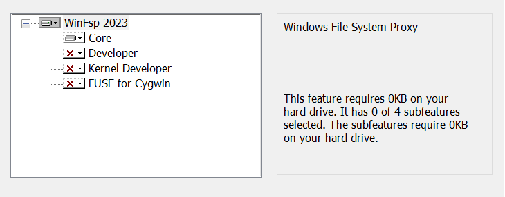
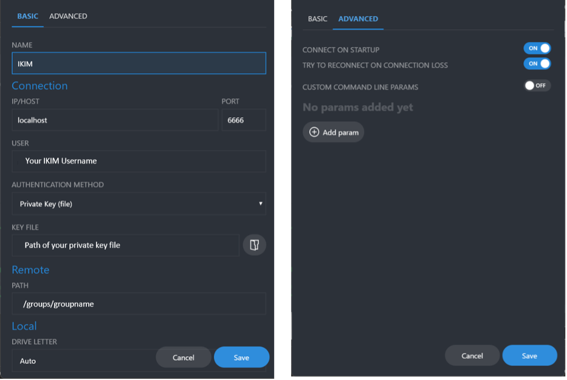
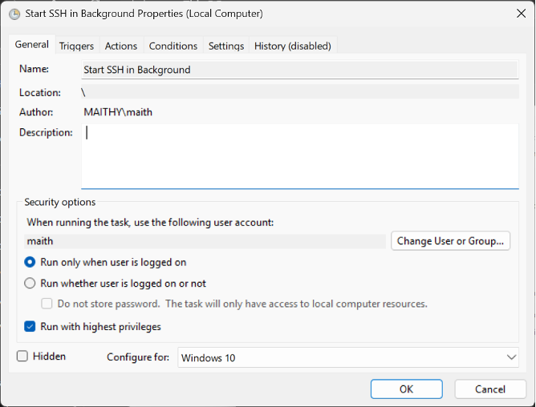
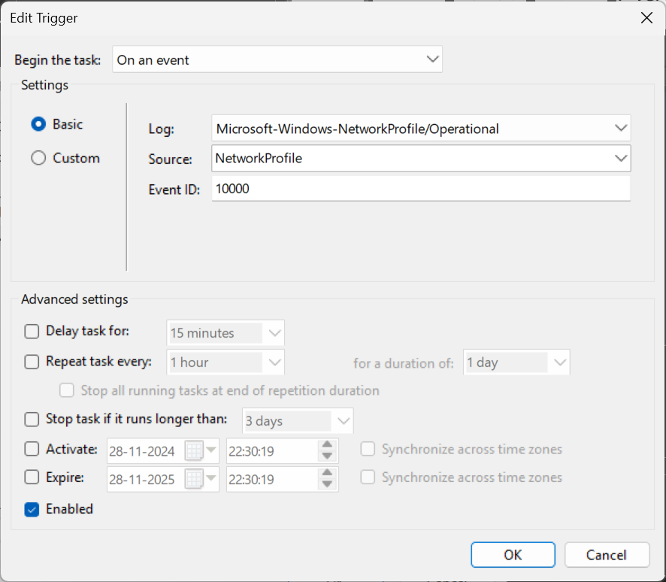
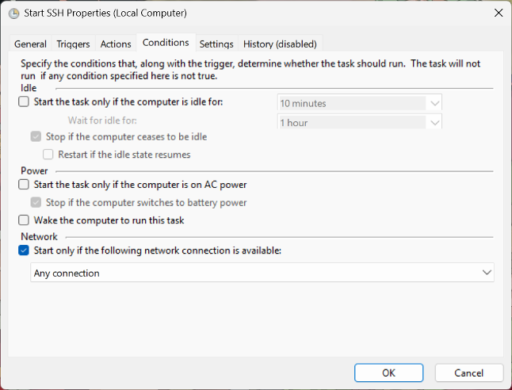
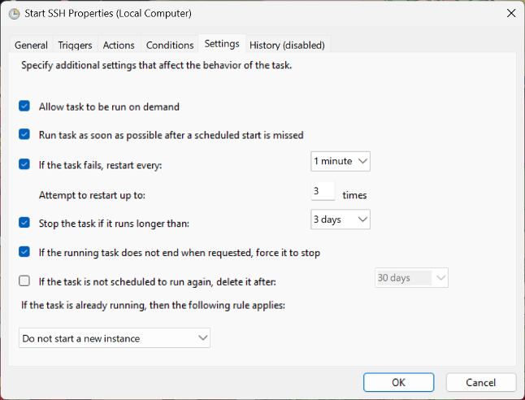

Data lifecycle · RCC ClusterDocs
Windows: recognize an existing SSHFS setup
Service status: project Samba shares are ready now. Ardia integration is not yet released. This historical SSHFS page is not a setup guide for either service.
Setting up access now? Skip this page. Follow Account access, SSH, and VS Code and use the RCC connection settings you were given. This page is only for people who already have an SSHFS setup on their Windows computer and need to identify or replace it.
This type of setup used WinFsp, SSHFS-Win, SSHFS-Win Manager, an SSH tunnel, and optionally Windows Task Scheduler.
If you see login.ikim.uk-essen.de, shellhost, or local port 6666 in a
saved configuration, do not copy those values into a new setup. Ask RCC for
the connection settings to use now.
SSH settings you may find on an existing computer
Location:
C:\Users\<WINDOWS-USERNAME>\.ssh\config
Pattern:
Host ikim
HostName login.ikim.uk-essen.de
User <RCC-USERNAME>
IdentityFile ~/.ssh/id_ikim
Host shellhost
HostName shellhost.ikim.uk-essen.de
User <RCC-USERNAME>
IdentityFile ~/.ssh/id_ikim
ProxyJump ikim
Do not reuse this unchanged. Obtain the current RCC configuration and key instructions from Account access, SSH, and VS Code.
Tunnel command you may find
Start-Process ssh -WindowStyle Hidden `
-ArgumentList "-fN", "-L", `
"6666:shellhost.ikim.uk-essen.de:22", "shellhost"
The SSHFS-Win Manager connection used the forwarded local port.
How this setup was installed
- Install a supported WinFsp release.
- Install a compatible SSHFS-Win release.
- Install SSHFS-Win Manager.
- Configure and test SSH.
- Add the SSHFS connection.
- Optionally use Task Scheduler to start the tunnel.
- Test with a small non-sensitive file.
The setup may refer to /homes/<username>/, /groups/<group>/, or
/project/<project>/. Confirm your project path with RCC before transferring
data.
Recognize the installed software
Do not copy values from these screenshots. They help you recognize an existing installation. For a new connection, use the software versions, server name, path, and port supplied by RCC.
The WinFsp installer selected the core filesystem component rather than the developer components:

The SSHFS-Win Manager example used a local forwarded connection and a group path. Do not copy its localhost port, key path, remote path, or automatic-start choice into a new setup:

The former optional automation used Windows Task Scheduler. These screenshots are retained so an existing task can be recognized and removed or migrated:




Do not create an unattended background tunnel merely because it appears in the walkthrough. Before changing or recreating it, ask RCC to confirm the server name, host identity, credential handling, need for automatic mounting, and safe stop behavior.
Appropriate use
Use the mount to inspect a report, edit a small text file, copy a sample sheet, or browse completed results.
Do not use it for complete sequencing runs, live Nanopore output, Ardia exports, large microscopy datasets, analysis, or hundreds of thousands of files.
Prefer the current RCC transfer portal, SFTP service, server-to-server transfer, or facility-managed ingestion for instrument data.
Return to Choosing an instrument-data transfer path before selecting a current transfer method.